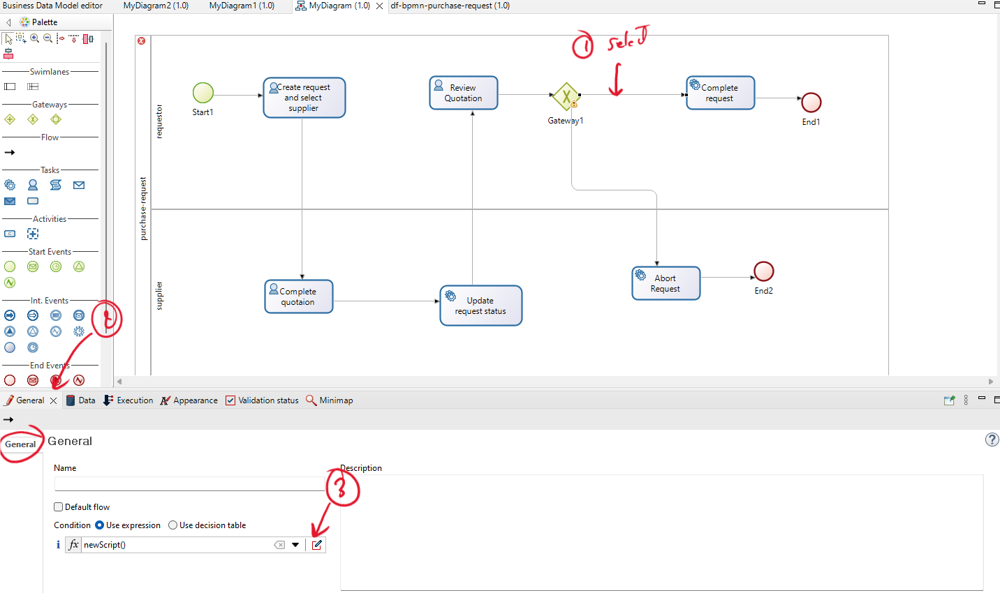
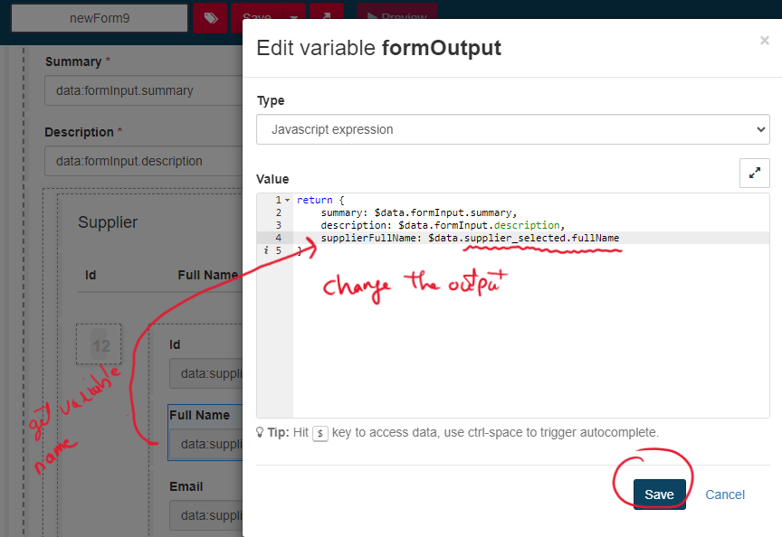

Convert to Bonita Studio for Execution
- Before converting to Bonita Studio, if you have a data processing operator, you should validate that
the behavior of the code is generated.
Note: in this example, you have not used the data processing operator.
If the behavior is not generated, you should click on 'generate behavior,' wait for a few seconds, and then revalidate the behavior.
-
To export to Bonita, click on the whitespace, go to the 'Bonita Integration' tab, enter the name of the
project to be exported, and click 'Export.' It may take a few seconds or a few minutes.

-
You can find a new process diagram within your project in Bonita Studio. If the project is not found,
you can refresh the Bonita project.
After converting from DF-BPMN to Bonita, there are manual implementations that you should perform before execution.
Define Gateways Conditions
-
Gateway after the activity "Review quotation"
The conditions are added to the sequence flow after the gateway, determining the flow's path.
Click on the sequence flow, then click on 'General,' and add the expression (conditions).

The expression should be defined based on a variable that has already been defined in the activities. If you used the second way to define the process variable (isAccepted) in the last activity, the conditions (script) should be as follows:

Alternatively, you should add the variable you are using to define the condition, such as an attribute of business data.
Add forms
You should add a form only for activities with the type 'Human'.-
Activity "Create request and select supplier"
After selecting the activity, go to the 'Execution' tab, and then click on the edit icon within the
'Form'.

Now, you can edit the name of the form and then save it.

In this example, you should add the list of suppliers by clicking on the database icon and selecting 'supplier.' Then, click 'Find' to retrieve the list of suppliers from the BDM.

Now, you should modify the output to return the full name of the selected supplier.

You should modify this output to include additional information.

Add the new output (fullName selected by the user, not manually entered).

For the other activities, you don't need to retrieve data from the database. Instead, you can simply generate a form and change its name. -
Activity "Complete quotation"
Please add a form for this activity. -
Activity "Review quotation"
Please add a form for this activity.